Les amplificateurs opérationnels (souvent abrégés AOP, ou op-amp en anglais) ont été conçus initialement pour la résolution analogique
de problèmes numériques tels que l'étude d'équations différentielles dont les solutions
analytiques sont inconnues. Le développement des calculateurs numériques a rendu caduc
l'usage de ces calculateurs analogiques.
Les amplificateurs opérationnels ont d'abord été réalisés avec des composants discrets (transistors, résistances, etc.).
L'électronique intégrée permet actuellement la fabrication d'amplificateurs sous forme de circuits intégrés (puces) dont les
performances sont excellentes, la mise en œuvre aisée et le coût modique1. Ils ne nécessitent
que peu de composants périphériques et les problèmes délicats de polarisation des
amplificateurs réalisés avec des composants discrets sont éliminés. Ils sont maintenant utilisés
dans de nombreux domaines de l'électronique analogique.
Caractéristiques des amplificateurs opérationnels
Pratiquement tous les amplificateurs opérationnels ont la même structure interne : ce sont
des circuits monolithiques dont une «puce» de silicium constitue le substrat commun. Ils
comportent en entrée un amplificateur différentiel (qui amplifie la différence de tension entre deux entrées) suivi d'un étage adaptateur d'impédance ;
l'amplificateur de sortie, de type push-pull, fonctionne souvent en classe B ou AB pour une meilleure efficacité. Toutes les liaisons entre étages sont
directes (sans condensateurs de liaison), permettant d'amplifier des signaux continus (fréquence nulle).
Ce sont des amplificateurs différentiels qui sont caractérisés par (valeurs typiques pour des AOP courants) :
◆ Un gain en tension différentiel (en boucle ouverte) très important : \( \mu_D = \mu \approx 10^5 \text{ à } 10^7 \) (soit 100 à 140 dB).
◆ Une impédance d'entrée différentielle très grande : \( R_E \approx 10^5 \text{ à } 10^{12} \, \Omega \).
◆ Une impédance d'entrée de mode commun très grande : \( R_{EMC} \approx 10^8 \text{ à } 10^{12} \, \Omega \).
◆ Une impédance de sortie faible : \( R_s \approx 10 \text{ à } 500 \, \Omega \).
◆ La réjection du mode commun (Taux de Réjection du Mode Commun, TRMC ou CMRR) est très grande. Le TRMC est souvent défini comme \( \text{TRMC} = 20 \log_{10} |\mu_D / \mu_{MC}| \), où \( \mu_{MC} \) est le gain de mode commun. Un TRMC élevé signifie que l'AOP amplifie très peu les signaux présents simultanément sur les deux entrées.
◆ La réponse en fréquence va du continu jusqu'à des fréquences assez élevées : le produit gain-bande passante (GBW ou PGB) peut dépasser 100 MHz pour certains AOP.
◆ Ils possèdent deux entrées notées + (l'entrée non inverseuse) et – (l'entrée inverseuse) mais ont une seule sortie.
◆ Ils utilisent, sauf exception, deux alimentations \( +U \) et \( -U \), symétriques par rapport à la masse (0V). Ces alimentations seront souvent omises sur les schémas pour simplifier, mais sont indispensables au fonctionnement.
Caractéristiques d'amplificateurs d'usage courant
Ce sont des circuits à moyenne intégration. Par exemple, le circuit équivalent du célèbre µA741 contient 24
transistors, 11 résistances et un condensateur (pour la compensation en fréquence interne).
Caractéristique
µA741C
TL081C
Gain en tension (boucle ouverte)
200 000 (\( \approx 106 \, \text{dB} \))
200 000 (\( \approx 106 \, \text{dB} \))
Courant d'entrée (Bias Current)
80 nA
30 pA
Résistance d'entrée
\( 2 \times 10^6 \, \Omega \) (2 MΩ)
\( 10^{12} \, \Omega \) (1 TΩ)
Fréquence pour gain = 1 (Produit Gain-Bande)
1 MHz
3 MHz
Vitesse de réponse (Slew rate)
0,5 V/µs
13 V/µs
Etage d'entrée
Transistors bipolaires
TEC à jonction (JFET)
Note: Le TL081C, avec son étage d'entrée à JFET, présente un courant d'entrée beaucoup plus faible et une résistance d'entrée beaucoup plus élevée que le µA741 à transistors bipolaires. Il a également un produit gain-bande et une vitesse de réponse supérieurs.
Modélisation d'un amplificateur opérationnel
On peut utiliser le schéma équivalent de la figure 1 qui met en évidence l'amplificateur
différentiel d'entrée et ses résistances caractéristiques.
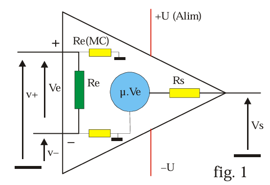
[Placeholder: Schéma équivalent AOP Fig. 1]
Fig. 1: Schéma équivalent simplifié d'un AOP montrant les impédances d'entrée (différentielle Re, mode commun Re(MC)) et de sortie (Rs), ainsi que la source de tension dépendante.
La tension de sortie d'un amplificateur différentiel réel est donnée par :
\[ V_s = \mu_D (v^+ - v^-) + \mu_{MC} \left( \frac{v^+ + v^-}{2} \right) \]
où \( \mu_D \) est le gain différentiel (souvent noté \( \mu \)), \( v^+ \) et \( v^- \) sont les tensions aux entrées non-inverseuse et inverseuse respectivement, et \( \mu_{MC} \) est le gain de mode commun (idéalement nul).
Ces amplificateurs sont conçus pour avoir un gain de mode commun \( \mu_{MC} \) aussi faible que
possible afin de ne pas amplifier les signaux présents sur les deux entrées à la fois (mode
commun) et qui correspondent en général à un bruit parasite ou à une tension continue non désirée.
Saturation des amplificateurs opérationnels
La tension de sortie \( V_s \) ne peut pas dépasser les tensions d'alimentation. Elle est limitée à des valeurs extrêmes \( +V_{sat} \) et \( -V_{sat} \) (tensions de saturation) qui sont légèrement inférieures (typiquement de 1 à 2 volts) aux tensions d'alimentation \( +U \) et \( -U \).
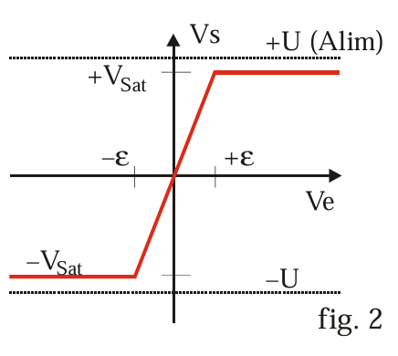
[Placeholder: Caractéristique de transfert AOP Fig. 2]
Fig. 2: Caractéristique de transfert tension d'entrée différentielle (\(V_e = v^+ - v^-\)) / tension de sortie (\(V_s\)), montrant la zone linéaire et les zones de saturation.
Le gain en boucle ouverte \( \mu \) étant très grand, la saturation de la sortie est obtenue pour des tensions d'entrée différentielles \( \epsilon = v^+ - v^- \) très faibles. Avec \( V_{sat} = 12 \, \text{V} \) et \( \mu = 10^5 \), la saturation est atteinte pour \( |\epsilon| > V_{sat} / \mu = 12 \, \text{V} / 10^5 = 0,12 \, \text{mV} \).
📌 Dans les montages amplificateurs linéaires, l'amplificateur opérationnel ne sera jamais utilisé en boucle ouverte (sans rétroaction) afin de ne pas atteindre la saturation immédiatement. On utilise une contre-réaction (boucle de rétroaction négative) pour contrôler le gain et assurer un fonctionnement linéaire.
2 - Amplificateur opérationnel et contre-réaction
La contre-réaction (ou rétroaction négative) est essentielle pour utiliser les AOP en mode linéaire (amplification, filtrage...). Elle consiste à réinjecter une partie du signal de sortie sur l'entrée inverseuse.
Contre-réaction en tension
Le signal d'entrée \( V_E \) est appliqué sur l'entrée non-inverseuse (+). Sur l'entrée inverseuse (-), et donc en opposition de phase
avec le signal d'entrée différentielle, on envoie une fraction \( \beta V_s \) du signal de sortie \( V_s \), via un réseau de réaction passif (généralement des résistances).
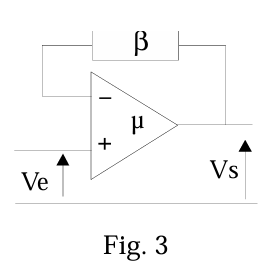
[Placeholder: Schéma contre-réaction en tension Fig. 3]
Fig. 3: Principe de la contre-réaction en tension.
La tension différentielle à l'entrée de l'AOP est \( V_d = V^+ - V^- = V_E - \beta V_s \).
La tension de sortie est \( V_s = \mu V_d = \mu (V_E - \beta V_s) \).
En réarrangeant, on obtient la fonction de transfert en boucle fermée :
\[ V_s = \frac{\mu V_E}{1 + \mu \beta} \]
Si le gain en boucle ouverte \( \mu \) est très grand devant \( 1/\beta \) (c'est-à-dire \( \mu \beta \gg 1 \)), la fonction de transfert devient :
\[ \frac{V_s}{V_E} \approx \frac{1}{\beta} \]
Conclusion importante : Si le gain en boucle ouverte \( \mu \) est très supérieur au gain souhaité en boucle fermée \( 1/\beta \), alors le gain effectif du système bouclé ne dépend pratiquement que du facteur de contre-réaction \( \beta \), déterminé par le réseau externe passif. Les performances du système bouclé deviennent alors indépendantes (ou presque) des caractéristiques propres de l'amplificateur (valeur exacte de \( \mu \), variations avec la température, etc.).
Contre-réaction via un diviseur de tension (Exemple : Amplificateur non-inverseur)
Considérons le montage de la Figure 4, où la sortie est bouclée sur l'entrée inverseuse (-) via un diviseur de tension (R1, R2). L'entrée \( V_{E2} \) est appliquée à l'entrée non-inverseuse (+), et une autre entrée \( V_{E1} \) peut être appliquée via R1 à l'entrée inverseuse (-). (Ce montage peut fonctionner en amplificateur différentiel ou non-inverseur si \( V_{E1}=0 \)).
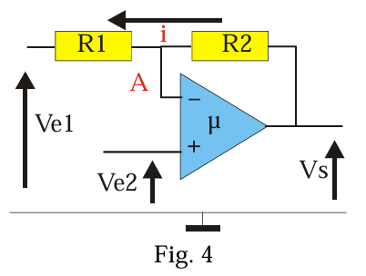
[Placeholder: Schéma contre-réaction via diviseur Fig. 4]
Fig. 4: Configuration avec contre-réaction via R1 et R2.
La tension de sortie est \( V_s = \mu (V^+ - V^-) = \mu (V_{E2} - V_A) \), où \( V_A \) est la tension au nœud A (entrée inverseuse).
Le courant d'entrée en A dans l'amplificateur opérationnel étant très faible (idéalement nul, \( < 1 \, \mu A \) en pratique), on peut le négliger devant celui qui circule dans R1 et R2.
En appliquant le théorème de Millman ou un diviseur de tension au point A :
\[ V_A = \frac{V_{E1}/R_1 + V_s/R_2}{1/R_1 + 1/R_2} = \frac{V_{E1} R_2 + V_s R_1}{R_1 + R_2} \]
On peut aussi écrire cela en posant le facteur de division \( \beta = \frac{R_1}{R_1 + R_2} \).
Alors \( V_A = V_{E1} (1-\beta) + V_s \beta \). (Vérification: \(V_{E1} \frac{R_2}{R_1+R_2} + V_s \frac{R_1}{R_1+R_2}\)).
Si le gain \( \mu \) est considéré comme infini (\( \mu \to \infty \)), alors \( \frac{\mu}{1 + \mu \beta} \to \frac{1}{\beta} \). L'expression de la tension de sortie devient :
\[ V_s \approx \frac{V_{E2} - V_{E1}(1 - \beta)}{\beta} \]
En remplaçant \( \beta = R_1 / (R_1 + R_2) \) et \( 1-\beta = R_2 / (R_1 + R_2) \):
\[ V_s \approx \frac{V_{E2} - V_{E1} (R_2 / (R_1 + R_2))}{R_1 / (R_1 + R_2)} = \frac{R_1 + R_2}{R_1} V_{E2} - \frac{R_2}{R_1} V_{E1} \]
C'est la formule de l'amplificateur différentiel (voir section 6).
3 – Fonctionnement des amplificateurs opérationnels
3.1 - L'amplificateur opérationnel idéal
Pour simplifier l'analyse des circuits, on utilise souvent le modèle de l'AOP idéal. Un amplificateur est considéré comme idéal si l'on peut admettre que :
Son gain en boucle ouverte est infini : \( \mu = \infty \)
Ses impédances d'entrée (différentielle et mode commun) sont infinies : \( Z_E = \infty, Z_{EMC} = \infty \)
Sa résistance de sortie est nulle : \( Z_s = 0 \)
CONSÉQUENCES (pour un AOP fonctionnant en régime linéaire avec contre-réaction) :
◆ La tension de sortie \( V_s \) étant finie, et \( \mu = \infty \), la tension différentielle d'entrée \( e = V_s / \mu \) doit être nulle : \( e = v^+ - v^- = 0 \).
◆ Les impédances d'entrée étant infinies, les courants d'entrée sont nuls : \( I^+ = 0, I^- = 0 \).
Règles de l'AOP idéal en régime linéaire :
\( v^+ - v^- = e = 0 \implies v^+ = v^- \) (Court-circuit virtuel entre les entrées)
\( I^+ = I^- = 0 \) (Courants d'entrée nuls)
\( \quad (2) \)
Important : Ces deux règles ne sont valables que si l'AOP fonctionne en régime linéaire, ce qui est typiquement assuré par une contre-réaction négative.
Si la tension d'entrée différentielle \( e \) n'est pas nulle (par exemple en boucle ouverte ou avec une réaction positive), la tension de sortie prend sa valeur maximale qui est la tension de saturation de l'amplificateur :
\[ V_s = +V_{sat} \text{ si } e > 0 \, ; \quad V_s = -V_{sat} \text{ si } e < 0 \]
📌 Un amplificateur opérationnel idéal utilisé avec une réaction négative fonctionne en régime amplificateur (linéaire). Ses deux entrées sont alors (virtuellement) au même potentiel. Si on l'utilise avec une réaction positive, ou sans réaction (boucle ouverte), il fonctionne en régime de saturation (non-linéaire). Les potentiels des entrées peuvent alors être différents.
3.2 - L'amplificateur opérationnel réel
L'AOP réel présente des limitations par rapport au modèle idéal :
◆ Le gain de l'amplificateur opérationnel est fini et fonction de la fréquence du signal. Le gain du système bouclé dépendra donc aussi de la fréquence et de la valeur finie de \( \mu \).
◆ L'amplificateur contient des sources de tension et de courant parasites (tensions et courants d'offset) qui modifient la tension de sortie, même en l'absence de signal d'entrée.
◆ La bande passante est limitée (produit gain-bande fini) et dépend du gain du système bouclé.
◆ L'amplificateur ne peut délivrer en sortie qu'une puissance (et un courant) limitée.
◆ La vitesse de balayage (Slew Rate) est finie, limitant la rapidité de variation de la tension de sortie.
Du fait de ces imperfections, le fonctionnement d'un amplificateur réel diffère de celui d'un
amplificateur idéal dans un certain nombre de domaines.
Problèmes liés à la valeur finie du gain
Reprenons l'expression du gain en boucle fermée (équation 1) :
\[ V_s = \frac{\mu}{1 + \mu \beta} (V_{E2} - V_{E1}(1-\beta)) \]
Si on suppose que \( \mu = \infty \), on obtient la valeur idéale \( V'_s = \frac{V_{E2} - V_{E1}(1 - \beta)}{\beta} \).
L'erreur relative introduite par le gain fini est approximativement :
\[ \epsilon = \frac{V'_s - V_s}{V'_s} \approx \frac{1}{1 + \mu \beta} \]
Pour \( \mu \beta \gg 1 \), on peut encore approximer par \( \epsilon \approx \frac{1}{\mu \beta} \).
EXEMPLE : On utilise un amplificateur inverseur (similaire à la figure 9, avec \( V_{E2} = 0 \) et \( V_E \) appliquée via R1). On prend : \( R_1 = 10 \, \text{k}\Omega \) et \( R_2 = 100 \, \text{k}\Omega \).
Dans le modèle idéal, le gain est \( A_v = V_s / V_{E1} = -R_2 / R_1 = -10 \).
Le facteur de contre-réaction \( \beta \) (fraction de la sortie revenant à l'entrée inverseuse via le diviseur R1-R2) est \( \beta = R_1 / (R_1 + R_2) = 10 / (10 + 100) = 1/11 \).
Si le gain en boucle ouverte est \( \mu = 1000 \) (valeur faible pour un AOP, mais illustrative), on commet une erreur relative :
\[ \epsilon \approx \frac{1}{\mu \beta} = \frac{1}{1000 \times (1/11)} = \frac{11}{1000} = 0.011 = 1,1\% \]
Cette erreur diminue si le gain \( \mu \) est plus élevé.
À cause des imperfections des composants internes de l'AOP, la tension de sortie n'est pas
nulle quand la tension différentielle d'entrée est nulle. C'est l'effet de la tension d'offset d'entrée (\( V_{OS} \) ou \( V_{IO} \)). Si ce phénomène présente un
inconvénient, on peut le corriger en introduisant un déséquilibre externe de l'amplificateur (via des broches dédiées sur certains AOP ou un circuit externe), ajustable
afin d'obtenir une tension nulle en sortie lorsque les deux entrées sont court-circuitées à la masse.
De plus, les courants qui entrent (ou sortent) des broches d'entrée ne sont pas nuls. Ce sont les courants de polarisation d'entrée (\( I_{B1} \) pour l'entrée (-) et \( I_{B2} \) pour l'entrée (+), souvent notés \( I_B \) ). En fait, \( I_{B1} \) et \( I_{B2} \) ne sont pas nuls et de plus ils ne sont pas identiques. La différence \( I_{OS} = |I_{B1} - I_{B2}| \) est appelée courant d'offset d'entrée.
Problèmes d'offset liés aux courants d'entrée
Considérons le circuit de l'amplificateur inverseur (figure 5). Si l'amplificateur opérationnel était
idéal (sans courants d'offset), avec \( V_E=0 \), sa tension de sortie serait nulle.
En présence des courants \( I_{B1} \) (entrant dans l'entrée -) et \( I_{B2} \) (entrant dans l'entrée +), une tension d'offset apparaît en sortie.
[Placeholder: Effet des courants d'entrée Fig. 5]
Fig. 5: Influence des courants de polarisation d'entrée et compensation.
Analyse de l'effet des courants d'entrée (en supposant \( V_E=0 \) et la tension d'offset d'entrée nulle pour isoler l'effet des courants) :
Le potentiel à l'entrée non-inverseuse est \( V^+ = -I_{B2} R_3 \) (en supposant que \( I_{B2} \) sort de l'AOP, le texte le note \(I_{b2}\) et le dessine sortant).
L'AOP idéal force \( V^- = V^+ = -I_{B2} R_3 \).
Appliquons la loi des nœuds (KCL) à l'entrée inverseuse (nœud A) : Le courant venant de R1 (nul car \( V_E=0 \) et \( V^- \) est fixé) plus \( I_{B1} \) doit être égal au courant allant vers R2.
\( \frac{0 - V^-}{R_1} + I_{B1} = \frac{V^- - V_s}{R_2} \) (en supposant \( I_{B1} \) entrant).
\( 0 + I_{B1} = \frac{V^- - V_s}{R_2} \)
\( V_s = V^- - R_2 I_{B1} = (-I_{B2} R_3) - R_2 I_{B1} \).
La tension de sortie parasite due aux courants d'entrée est \( V_s = -R_2 I_{B1} - R_3 I_{B2} \).
Si on utilise la convention du schéma où \(I_{b1}\) et \(I_{b2}\) sont sortants: \( V^+ = +I_{b2} R_3 \). \( V^- = V^+ = I_{b2} R_3 \). KCL à \(V^-\) : \( \frac{0-V^-}{R_1} - I_{b1} = \frac{V^- - V_s}{R_2} \). \( -V^-/R_1 - I_{b1} = (V^- - V_s)/R_2 \). \( V_s = V^- - R_2(-V^-/R_1 - I_{b1}) = V^-(1+R2/R1) + R2 I_{b1} \). \( V_s = I_{b2}R_3(1+R2/R1) + R2 I_{b1} = I_{b2} R_3 \frac{R1+R2}{R1} + R2 I_{b1} \).
Le texte obtient \( V_s = I_{B1} R_2 - \frac{R_1 + R_2}{R_1} R_3 I_{B2} \). Cela correspond à \( I_{B1} \) sortant et \( I_{B2} \) sortant.
On peut minimiser la valeur de la tension de sortie parasite \( V_s \) due aux courants de polarisation (en supposant \( I_{B1} \approx I_{B2} = I_B \) et en négligeant le courant d'offset \( I_{OS} \)). Il faut rendre les coefficients de \( I_{B1} \) et \( I_{B2} \) égaux (en valeur absolue dans la formule du texte):
\( R_2 = R_3 \frac{R_1 + R_2}{R_1} \).
Ceci conduit à la condition :
\[ R_3 = \frac{R_1 R_2}{R_1 + R_2} = R_1 \, || \, R_2 \]
\( R_3 \) doit être égale à la résistance équivalente vue par l'entrée inverseuse (-) regardant vers l'extérieur (ici, R1 en parallèle avec R2, car l'entrée de signal \( V_E \) est supposée avoir une impédance nulle, et la sortie \( V_s \) est aussi supposée avoir une impédance nulle via l'AOP).
📌 Pour minimiser l'influence des courants de polarisation d'entrée, il faut placer des impédances vues par les deux entrées qui soient identiques. Dans l'exemple ci-dessus, l'entrée (-) voit \( R_1 || R_2 \). Il faut donc placer une résistance \( R_3 = R_1 || R_2 \) sur l'entrée (+).
Réponse en fréquence
On peut, en première approximation, considérer que les amplificateurs opérationnels réels se
comportent comme des systèmes du premier ordre ayant une fréquence de coupure \( f_c \) (à -3 dB)
très basse (souvent voisine de 10 Hz pour les AOP compensés comme le 741) et dont le produit GB (gain-bande passante) en système bouclé
est (approximativement) constant.
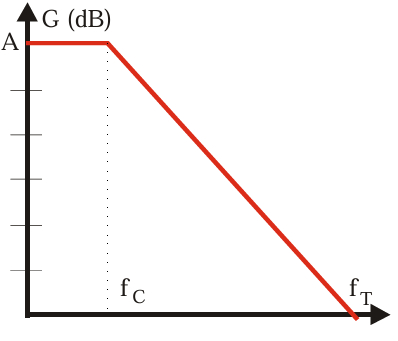
[Placeholder: Diagramme de Bode AOP Fig. (Gain)]
Gain en boucle ouverte (dB) en fonction de la fréquence (log). Montre le gain DC (A), la fréquence de coupure (fc), la pente de -20 dB/décade, et la fréquence de gain unité (ft = GBW).
En première approximation, le gain en boucle ouverte s'écrit :
\[ \mu(f) = \frac{A}{1 + j \frac{f}{f_c}} \quad (3) \]
où \( A \) est le gain en continu (gain DC, typiquement \( 10^5 \) à \( 10^6 \)) et \( f_c \) la fréquence de coupure (-3dB). Au-delà
de \( f_c \), le gain diminue de 20 dB par décade. Il est égal à 1 (0 dB) pour
une fréquence \( f_T \) dont la valeur correspond au produit Gain-Bande (GBW ou PGB) : \( f_T = A \times f_c \).
Pour certains amplificateurs opérationnels, le comportement en fréquence peut être amélioré ou modifié en ajoutant des composants
externes (compensation externe).
Une autre grandeur à prendre également en compte est le temps de montée ou plutôt la vitesse de balayage (Slew Rate en anglais) qui caractérise la rapidité maximale de la réponse en sortie à une variation brutale de la tension
d'entrée (échelon). Il s'exprime en V/µs. Un Slew Rate limité peut distordre les signaux de sortie de grande amplitude et haute fréquence (ex: transforme une sinusoïde en triangle).
Le modèle de l'amplificateur idéal est satisfaisant tant que la valeur du gain en boucle
ouverte \( |\mu(f)| \) reste très supérieure à celui du gain en boucle fermée souhaité, c'est-à-dire aux basses
fréquences. Quand cette condition n'est plus réalisée (aux fréquences plus élevées), il faut reprendre l'étude du circuit en
utilisant la valeur du gain donnée par la relation (3).
Nous allons examiner diverses possibilités d'utilisation des amplificateurs opérationnels en
utilisant principalement le modèle idéal. Pour déterminer la fonction de transfert, on peut utiliser la relation
générale (1) mais le calcul direct basé sur les règles \( v^+=v^- \) et \( I^+=I^-=0 \) est souvent plus rapide.
4 - Utilisation de l'entrée non inverseuse
Multiplicateur (Amplificateur non-inverseur)
Le signal à amplifier \( V_E \) est appliqué sur l'entrée non-inverseuse (+). Pour diminuer l'influence des courants
d'entrée (voir §3.2), on ajoute sur cette entrée une résistance \( R_0 \) dont la valeur doit être égale à l'impédance vue par l'autre entrée, soit \( R_0 = R_1 || R_2 \). Avec un amplificateur idéal, il
est inutile de la prendre en compte puisque le courant \( I^+ \) qui la traverse est nul. On a donc : \( V^+ = V_E \).
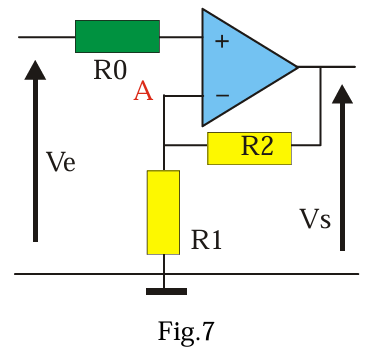
[Placeholder: Amplificateur non-inverseur Fig. 7]
Fig. 7: Amplificateur non-inverseur. R0 est optionnelle (compensation d'offset).
Comme la réaction est négative (boucle de R2 vers l'entrée -), on peut écrire que : \( V^+ = V^- = V_A \). Donc \( V_A = V_E \).
Le courant d'entrée \( I^- \) étant négligeable, l'application du théorème de Millman (ou simplement la formule du diviseur de tension inversée) au point A donne :
\[ V_A = \frac{V_s / R_2 + 0 / R_1}{1 / R_2 + 1 / R_1} = V_s \frac{R_1}{R_1 + R_2} \]
En égalant les deux expressions de \( V_A \):
\[ V_E = V_s \frac{R_1}{R_1 + R_2} \]
On en déduit le gain en tension en boucle fermée :
\[ \frac{V_s}{V_E} = \frac{R_1 + R_2}{R_1} = 1 + \frac{R_2}{R_1} \]
Le gain est positif et toujours supérieur ou égal à 1.
Avec un amplificateur opérationnel idéal, l'impédance d'entrée du montage est infinie (car \( I^+ = 0 \)).
Si la tension d'entrée \( V_E \) est trop grande, il y aura saturation de la sortie : la relation précédente n'est valable que si \( |V_s| < V_{sat} \).
La fréquence du signal d'entrée doit être inférieure à une fréquence limite qui est fonction du gain. Le produit Gain × Bande Passante est approximativement constant et égal au produit gain-bande \( f_T \) de l'AOP. Bande Passante \( \approx f_T / \text{Gain} \). Par exemple, avec un AOP de \( f_T = 20 \, \text{MHz} \), et un gain \( 1 + R_2/R_1 = 101 \), la fréquence de coupure (-3dB) sera voisine de \( 20 \, \text{MHz} / 101 \approx 200 \, \text{kHz} \).
C'est un cas particulier de l'amplificateur non-inverseur où la sortie est directement reliée à l'entrée inverseuse (équivalent à \( R_1 \to \infty \) ou \( R_2 = 0 \)).
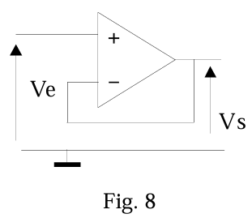
[Placeholder: Circuit suiveur Fig. 8]
Fig. 8: Circuit suiveur (ou buffer).
Comme \( V^+ = V^- \) (régime linéaire) et \( V^- = V_s \), on a \( V_E = V^+ = V^- = V_s \).
\[ V_s = V_E \]
Le gain est unitaire (Gain = 1).
En première analyse ce montage ne présente aucun intérêt en termes d'amplification. Mais on constate que son impédance d'entrée \( Z_E \) est très grande (idéalement infinie) et son impédance de sortie \( Z_s \) très faible (idéalement nulle). La sortie ne prélevant aucune puissance (ou presque) sur le circuit d'entrée, il ne perturbe pas celui-ci. Inversement, il peut fournir du courant à une charge connectée en sortie sans que sa tension ne chute (dans les limites de l'AOP).
Ce montage constitue un adaptateur d'impédance de gain unité, souvent appelé "buffer". Il est utilisé pour isoler une source d'une charge.
5 - Utilisation de l'entrée inverseuse
5.1 – Multiplicateur (Amplificateur inverseur)
Le signal d'entrée \( V_E \) est appliqué à l'entrée inverseuse (-) via une résistance R1. L'entrée non-inverseuse (+) est reliée à la masse, souvent par une résistance \( R_3 \) pour compenser les effets des courants d'entrée (voir §3.2). On prendra idéalement \( R_3 = R_1 || R_2 \). Le courant qui circule dans cette résistance \( R_3 \) étant très faible ( \( I^+ = 0 \) ), le potentiel de l'entrée + est celui de la masse : \( V^+ = 0 \).
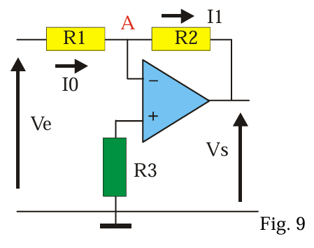
[Placeholder: Amplificateur inverseur Fig. 9]
Fig. 9: Amplificateur inverseur. R3 est pour la compensation d'offset.
En régime linéaire (contre-réaction via R2), \( V^- = V^+ = 0 \). Le point A (entrée -) est donc à un potentiel nul, mais n'est pas directement relié à la masse. On dit que ce point est une masse virtuelle.
Appliquons la loi des nœuds (KCL) au point A (masse virtuelle), en tenant compte que \( I^- = 0 \):
Le courant entrant par R1 (\( I_0 \)) doit être égal au courant sortant par R2 (\( I_1 \)).
\[ I_0 = \frac{V_E - V_A}{R_1} = \frac{V_E - 0}{R_1} = \frac{V_E}{R_1} \]
\[ I_1 = \frac{V_A - V_s}{R_2} = \frac{0 - V_s}{R_2} = -\frac{V_s}{R_2} \]
En égalant les courants (\( I_0 = I_1 \)):
\[ \frac{V_E}{R_1} = -\frac{V_s}{R_2} \]
On en déduit le gain :
\[ \frac{V_s}{V_E} = -\frac{R_2}{R_1} \]
Le gain est négatif, indiquant un déphasage de \( \pi \) (180°) entre l'entrée et la sortie en régime sinusoïdal.
Le courant d'entrée du montage (courant \( I_0 \) fourni par la source \( V_E \)) dépend de R1. L'impédance d'entrée du montage est égale à \( R_1 \) (car le point A est à 0V).
Ce montage permet d'additionner (avec une inversion et une pondération) plusieurs tensions d'entrée. L'entrée non-inverseuse (+) est à la masse (via Rp pour compensation d'offset, \( R_p = R_0 || R_1 || R_2 \)). Si l'amplificateur opérationnel est idéal, \( V^- = V^+ = 0 \) (masse virtuelle).
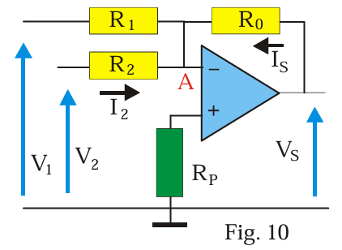
[Placeholder: Sommateur inverseur Fig. 10]
Fig. 10: Sommateur inverseur.
Appliquons KCL au nœud A (masse virtuelle), sachant que \( I^- = 0 \):
La somme des courants entrants par R1 et R2 doit être égale au courant sortant par R0 (noté Is).
\[ I_1 + I_2 = I_s \]
\[ \frac{V_1 - V_A}{R_1} + \frac{V_2 - V_A}{R_2} = \frac{V_A - V_s}{R_0} \]
Avec \( V_A = 0 \):
\[ \frac{V_1}{R_1} + \frac{V_2}{R_2} = -\frac{V_s}{R_0} \]
La tension de sortie est donc :
\[ V_s = -R_0 \left( \frac{V_1}{R_1} + \frac{V_2}{R_2} \right) \]
En choisissant \( R_1 = R_2 = R_0 = R \), on obtient un simple sommateur inverseur : \( V_s = -(V_1 + V_2) \).
En choisissant des valeurs différentes, on peut réaliser une somme pondérée. Ce montage est souvent utilisé comme « mélangeur » de signaux audio, par exemple.
On remplace la résistance de contre-réaction R2 de l'amplificateur inverseur par un condensateur C. Le signal d'entrée est \( V_E(t) \). Dans le modèle idéal, \( V^+ = 0 \) et \( V^- = V_A = 0 \) (masse virtuelle).
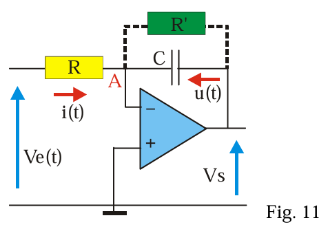
[Placeholder: Intégrateur idéal Fig. 11]
Fig. 11: Intégrateur idéal (problématique en pratique).
Le courant traversant la résistance R est :
\[ i(t) = \frac{V_E(t) - V_A}{R} = \frac{V_E(t)}{R} \]
Ce courant charge le condensateur C. Le courant dans le condensateur est aussi (en notant que le courant va de A=0V vers Vs):
\[ i(t) = C \frac{d(V_A - V_s)}{dt} = C \frac{d(0 - V_s)}{dt} = -C \frac{dV_s}{dt} \]
En égalant les deux expressions de \( i(t) \):
\[ \frac{V_E(t)}{R} = -C \frac{dV_s}{dt} \]
\[ \frac{dV_s}{dt} = -\frac{1}{RC} V_E(t) \]
Par intégration par rapport au temps, on tire :
\[ V_s(t) = -\frac{1}{RC} \int_0^t V_E(\theta) d\theta + V_s(0) \]
où \( V_s(0) \) est la tension de sortie à l'instant \( t=0 \) (constante d'intégration). La sortie est proportionnelle à l'intégrale (inversée) de l'entrée.
Problème pratique : En fait, ce montage ne fonctionne pas correctement en pratique sur de longues durées. Le faible courant d'offset d'entrée (\( I_{B1} \)) et la tension d'offset d'entrée (\( V_{OS} \)), même s'ils sont petits, sont aussi intégrés. Comme \( V_E(t) \) contient généralement une composante continue (même très faible due aux offsets), le courant \( i(t) \) a une valeur moyenne non nulle. L'intégrale de cette composante continue croît linéairement avec le temps (\( \int K dt = Kt \)), ce qui fait que la sortie \( V_s(t) \) dérive et finit par atteindre la saturation (\( +V_{sat} \) ou \( -V_{sat} \)) car le condensateur se charge indéfiniment.
Solution pratique : Pour obtenir une intégration satisfaisante pour des signaux alternatifs et éviter la saturation due aux composantes continues, on peut placer une résistance \( R' \) en parallèle sur le condensateur C afin de permettre l'écoulement du courant continu de décharge (elle limite le gain en DC). Cette résistance doit être assez grande pour ne pas perturber l'intégrateur aux fréquences d'intérêt (\( R' \gg 1/(\omega C) \)) mais pas trop pour pouvoir jouer son rôle de limitation du gain DC. En pratique, on prend souvent \( R' \approx 10 R \). Le montage devient alors un filtre passe-bas du premier ordre avec une fréquence de coupure très basse (\( f_c = 1/(2\pi R'C) \)). Il se comporte comme un intégrateur pour \( f \gg f_c \). Un circuit de 'reset' (court-circuitant C) est aussi souvent nécessaire.
5.4 - Dérivateur idéal
Par permutation du condensateur et de la résistance dans le montage intégrateur, on obtient un dérivateur. \( V^+ = 0 \), \( V^- = V_A = 0 \) (masse virtuelle).
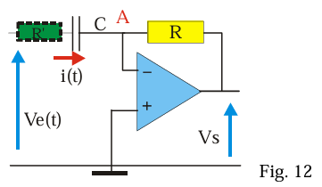
[Placeholder: Dérivateur idéal Fig. 12]
Fig. 12: Dérivateur idéal (problématique en pratique).
Le courant traversant le condensateur C est :
\[ i(t) = C \frac{d(V_E(t) - V_A)}{dt} = C \frac{d V_E(t)}{dt} \]
Ce même courant circule dans la résistance R (car \( I^- = 0 \)). La tension aux bornes de R est \( V_A - V_s \).
\[ i(t) = \frac{V_A - V_s}{R} = \frac{0 - V_s}{R} = -\frac{V_s(t)}{R} \]
En égalant les deux expressions de \( i(t) \):
\[ C \frac{d V_E(t)}{dt} = -\frac{V_s(t)}{R} \]
Donc la tension de sortie est proportionnelle à la dérivée (inversée) de la tension d'entrée :
\[ V_s(t) = -RC \frac{d V_E(t)}{dt} \]
Problèmes pratiques :
En pratique, R et C sont choisis en fonction de la fréquence du signal pour obtenir un gain (\( |V_s / V_E| = \omega RC \)) raisonnable (par exemple compris entre 0,1 et 10) dans la bande de fréquence utile.
Cependant, ce montage est très sensible au bruit haute fréquence : la dérivée d'un bruit rapide est grande, donc le gain \( \omega RC \) augmente avec la fréquence, amplifiant le bruit. Il a aussi tendance à osciller en haute fréquence car la phase introduite par l'AOP réel à haute fréquence peut rendre la rétroaction positive. Le montage est également sensible à la dérive DC (bien que moins que l'intégrateur).
Solution pratique : Pour y remédier, on peut placer une petite résistance \( R' \) en série avec le condensateur C (par exemple \( R' < R/10 \)). Cela limite le gain aux hautes fréquences à \( -R/R' \) et améliore la stabilité. On peut aussi ajouter un petit condensateur en parallèle avec R pour limiter la bande passante.
On cherche à générer un courant dans une charge \( Z_L \) qui soit proportionnel à une tension d'entrée \( V_E \), indépendamment de la valeur de \( Z_L \).
Un montage simple (Figure 13) utilise le fait que le courant qui circule dans la résistance R d'entrée est fixé par \( V_E \) si l'entrée (-) est une masse virtuelle.
Analyse (Fig 13): \( V^+ \) est à la masse. \( V^- = V^+ = 0 \) (masse virtuelle).
Le courant fourni par la source \( V_E \) est \( I = (V_E - V^-)/R = V_E / R \).
Comme \( I^- = 0 \), ce courant \( I \) doit traverser la charge "Charge" connectée entre le point A (\( V^- \)) et la sortie de l'AOP.
Donc, le courant dans la charge est \( I_{charge} = I = V_E / R \).
Ce courant est donc indépendant de la nature et de la valeur de l'impédance de la charge. Le montage est équivalent à un générateur de courant commandé par une tension.
Limites : La charge est "flottante" (aucun de ses bornes n'est à la masse), ce qui n'est pas toujours pratique. La réalisation pratique d'un tel convertisseur s'écarte souvent de ce schéma de principe car le courant de sortie de l'amplificateur opérationnel est limité (\( I_{s,max} \)). La tension aux bornes de la charge est aussi limitée par la tension de saturation de l'AOP (\( V_s \)).
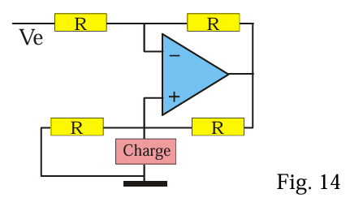
[Placeholder: Source de Howland Fig. 14]
Fig. 14: Source de courant de Howland (charge référencée à la masse possible).
Pour le montage plus complexe de la Figure 14, nommé source de Howland, on peut montrer que si les 4 résistances R sont égales, le courant dans la charge (connectée entre la sortie de l'AOP et la jonction des deux résistances R de droite) est égal à :
\[ I_{charge} = -\frac{V_E}{R} \]
Ce montage permet d'avoir une charge référencée à la masse.
On relie le point A (entrée inverseuse, masse virtuelle) à un générateur de courant d'intensité \( I \). La résistance de feedback est R. \( V^+ = 0 \), \( V^- = 0 \).
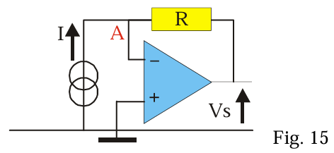
[Placeholder: Convertisseur I-V Fig. 15]
Fig. 15: Convertisseur Courant-Tension (Amplificateur de Transimpédance).
Le courant d'entrée \( I \) ne peut pas entrer dans l'AOP (\( I^-=0 \)), il doit donc circuler entièrement dans la résistance de contre-réaction R.
Le courant dans R est \( I_R = (V_A - V_s) / R = (0 - V_s) / R = -V_s / R \).
Donc \( I = I_R = -V_s / R \).
On a donc :
\[ V_s = - R \cdot I \]
Le montage se comporte en générateur de tension commandé par un courant. La tension de sortie est proportionnelle au courant d'entrée.
Un tel montage peut être utilisé pour amplifier le courant d'une photodiode (qui se comporte comme une source de courant proportionnelle à l'éclairement).
6 - Amplificateur différentiel
À cause des problèmes de saturation liés au gain très élevé en boucle ouverte, il est impossible d'utiliser directement un amplificateur opérationnel comme amplificateur différentiel (sans contre-réaction). On utilise souvent le montage de la figure 16, qui utilise un seul AOP avec un réseau de résistances.
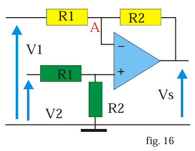
[Placeholder: Amplificateur différentiel à 1 AOP Fig. 16]
Fig. 16: Amplificateur différentiel utilisant un AOP.
Analyse (avec AOP idéal) :
Comme il n'y a pas de courant prélevé par l'entrée non-inverseuse (+), les résistances R1 et R2 (celles connectées à \( V_2 \)) constituent un diviseur de tension idéal pour la tension \( V^+ \) :
\[ V^+ = V_2 \frac{R_2}{R_1 + R_2} \]
Pour l'entrée inverseuse (-), en utilisant le principe de superposition ou Millman (ou KCL), et sachant que \( V^- = V^+ \) :
\[ V^- = \frac{V_1 / R_1 + V_s / R_2}{1/R_1 + 1/R_2} = \frac{V_1 R_2 + V_s R_1}{R_1 + R_2} \]
En égalant \( V^+ \) et \( V^- \) :
\[ V_2 \frac{R_2}{R_1 + R_2} = \frac{V_1 R_2 + V_s R_1}{R_1 + R_2} \]
En multipliant par \( R_1 + R_2 \) :
\[ V_2 R_2 = V_1 R_2 + V_s R_1 \]
En isolant \( V_s \) :
\[ V_s R_1 = R_2 (V_2 - V_1) \]
\[ V_s = \frac{R_2}{R_1} (V_2 - V_1) \]
La sortie est proportionnelle à la différence des tensions d'entrée. Le gain différentiel est \( R_2 / R_1 \).
Inconvénient : Les impédances vues par les deux générateurs \( V_1 \) et \( V_2 \) sont différentes (\( Z_{in1} = R_1 \), \( Z_{in2} = R_1 + R_2 \)). De plus, pour obtenir une bonne réjection du mode commun (CMRR), il faut que le rapport \( R_2/R_1 \) soit exactement le même pour les deux paires de résistances, ce qui est difficile à réaliser avec des résistances discrètes.
Des circuits intégrés spécifiques, appelés amplificateurs d'instrumentation (voir section 12), résolvent ces problèmes.
7 - L'amplificateur opérationnel en régime de saturation
Lorsque l'AOP n'est pas utilisé avec une contre-réaction négative stabilisante, ou lorsque la tension différentielle d'entrée dépasse le seuil \( \pm V_{sat}/\mu \), la sortie bascule vers l'une des tensions de saturation. Ce comportement est exploité dans les comparateurs.
7.1 – Comparateur simple
Envisageons un amplificateur dont l'entrée inverseuse (-) est connectée à un potentiel fixe \( V_0 \) (tension de référence ou de consigne) et le signal d'entrée \( V_e \) est appliqué à l'entrée non-inverseuse (+). L'AOP est utilisé en boucle ouverte.
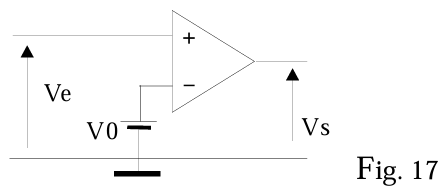
[Placeholder: Comparateur simple Fig. 17]
Fig. 17: Comparateur simple.
On sait que la sortie est \( V_s = \mu (v^+ - v^-) = \mu (V_e - V_0) \).
Le gain \( \mu \) est très grand (\( \mu > 10^5 \)). Pour un écart très faible entre les potentiels des deux entrées, on aboutit à la saturation de la sortie.
Si \( V_e > V_0 \), alors \( v^+ > v^- \), donc \( V_s = +V_{sat} \approx +U \).
Si \( V_e < V_0 \), alors \( v^+ < v^- \), donc \( V_s = -V_{sat} \approx -U \).
La sortie bascule donc entre \( +V_{sat} \) et \( -V_{sat} \) selon que l'entrée \( V_e \) est supérieure ou inférieure à la tension de référence \( V_0 \).
(Note : L'écart entre les tensions de saturation positive et négative, \( +V_{sat} \) et \( -V_{sat} \), est fonction de la structure interne de l'amplificateur opérationnel utilisé. Cet écart, qui est en général faible, sera dans la suite négligé, en considérant \( V_{sat} \approx U \)).
Le comparateur est utilisé dans de nombreux montages, en particulier dans les asservissements et les systèmes de commande logique. Si le signal d'entrée est une tension générée par un capteur, ce dispositif permet de commander en mode tout ou rien (on/off) un actionneur relié à la sortie de l'amplificateur.
Des circuits spécifiques appelés comparateurs sont conçus pour cette application. Ils sont optimisés pour avoir des temps de basculement (temps de montée/descente) aussi petits que possible, et leur sortie est souvent compatible avec les niveaux logiques (TTL, CMOS).
7.2 - Comparateur à hystérésis ou trigger3 de Schmitt
Dans ce montage, une partie de la tension de sortie est réinjectée sur l'entrée non-inverseuse (+) via la résistance R2. La réaction est donc positive, ce qui va renforcer le basculement et introduire un effet de mémoire appelé hystérésis. Un potentiel de référence \( V_{Ref} \) est appliqué à l'entrée (+) via R1. Le signal d'entrée \( V_e \) est appliqué à l'entrée inverseuse (-).
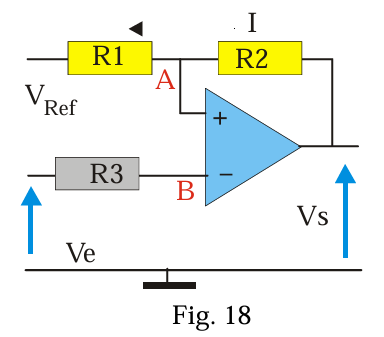
[Placeholder: Trigger de Schmitt Fig. 18]
Fig. 18: Comparateur à hystérésis (Trigger de Schmitt).
Analyse : La tension à l'entrée inverseuse est \( V^- = V_e \). La tension à l'entrée non-inverseuse \( V^+ = V_A \) est déterminée par le diviseur de tension formé par R1 et R2, alimenté par \( V_{Ref} \) et \( V_s \).
\[ V_A = \frac{V_{Ref}/R_1 + V_s/R_2}{1/R_1 + 1/R_2} = \frac{V_{Ref} R_2 + V_s R_1}{R_1 + R_2} \]
L'AOP compare \( V^- = V_e \) et \( V^+ = V_A \).
Cas 1 : \( V_e \) croît depuis une valeur très négative. Au départ, \( V_e < V_A \), donc \( V_s = +V_{sat} \approx +U \). Le seuil de basculement supérieur \( V_1 \) (ou UTL - Upper Threshold Level) est atteint quand \( V_e \) atteint \( V_A \) avec \( V_s = +U \).
\[ V_1 = V_A|_{V_s=+U} = \frac{V_{Ref} R_2 + U R_1}{R_1 + R_2} \]
(Formule équivalente du texte: \( V_1 = V_{Ref} + (U - V_{Ref}) \frac{R_1}{R_1 + R_2} \)).
Quand \( V_e \) dépasse \( V_1 \), \( V^- > V^+ \), la sortie bascule à \( V_s = -V_{sat} \approx -U \).
Cas 2 : \( V_e \) décroît depuis une valeur très positive. Au départ, \( V_s = -U \). Le seuil de basculement inférieur \( V_2 \) (ou LTL - Lower Threshold Level) est atteint quand \( V_e \) descend jusqu'à \( V_A \) avec \( V_s = -U \).
\[ V_2 = V_A|_{V_s=-U} = \frac{V_{Ref} R_2 - U R_1}{R_1 + R_2} \]
(Formule équivalente du texte: \( V_2 = V_{Ref} - (U + V_{Ref}) \frac{R_1}{R_1 + R_2} \). Attention, la formule du texte semble avoir un signe incorrect sur U ou Vref, la formule dérivée ici est plus standard).
Quand \( V_e \) devient inférieur à \( V_2 \), \( V^- < V^+ \), la sortie rebascule à \( V_s = +U \).
Les valeurs des deux tensions de basculement \( V_1 \) et \( V_2 \) étant différentes (\( V_1 > V_2 \)), on dit que le système présente une hystérésis. La largeur de l'hystérésis est \( V_H = V_1 - V_2 = \frac{2 U R_1}{R_1 + R_2} \).
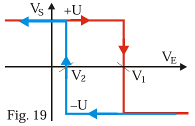
[Placeholder: Caractéristique de transfert avec hystérésis Fig. 19]
◆ Immunité au bruit : Avec un comparateur simple, si la tension d'entrée fluctue autour du seuil \( V_0 \) (à cause du bruit), la sortie peut basculer plusieurs fois de manière indésirable. Avec un comparateur à hystérésis, le système ne bascule que si l'entrée dépasse largement le seuil précédent dans la direction opposée (\( V_1 \) ou \( V_2 \)). Si l'écart entre les seuils (\( V_H \)) est supérieur à l'amplitude des fluctuations (bruit) du signal d'entrée, le système n'oscille pas.
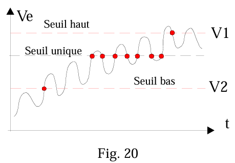
[Placeholder: Comparaison simple vs hystérésis avec bruit Fig. 20]
Fig. 20: Comparaison du comportement face au bruit : (gauche) comparateur simple, (droite) trigger de Schmitt.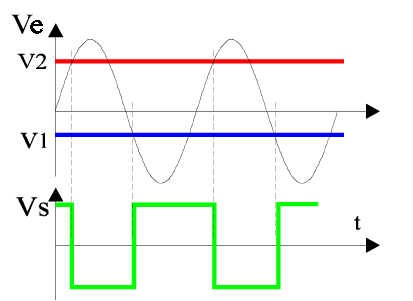
◆ Mise en forme de signaux : Si la tension d'entrée est un signal sinusoïdal (ou autre forme lente) d'amplitude suffisante pour dépasser les seuils \( V_1 \) et \( V_2 \), la tension de sortie est un signal rectangulaire d'amplitude \( \approx 2U \) (de \( -U \) à \( +U \)), dont les fronts coïncident avec le passage de \( V_e \) par \( V_1 \) et \( V_2 \).
7.3 - Multivibrateur astable
On réalise le circuit de la figure 21 dans lequel la résistance R2 introduit une réaction positive (comme le trigger de Schmitt). L'amplificateur fonctionne donc en régime de saturation (\( V_s = \pm U \)). On ajoute un circuit RC (R3, C) qui introduit un retard dans la boucle de contre-réaction vers l'entrée inverseuse (-).
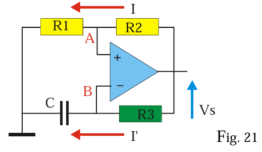
[Placeholder: Multivibrateur astable Fig. 21]
Fig. 21: Multivibrateur astable à AOP.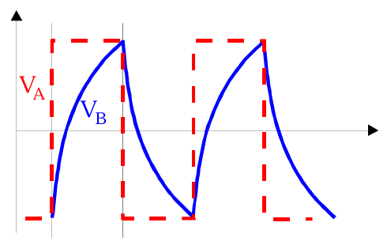
[Placeholder: Formes d'onde Astable Fig. 21 bis]
Formes d'onde typiques pour \(V_A\) (seuil) et \(V_B\) (tension condensateur) dans le multivibrateur astable.
Principe du fonctionnement
Le circuit oscille de manière autonome (astable) sans signal d'entrée.
Supposons qu'au démarrage, \( V_s = +U \). Le potentiel au point A (entrée +) est le seuil haut \( V_{TH} = V_A = +U \frac{R_1}{R_1 + R_2} \).
Le condensateur C se charge à travers R3 vers la tension \( +U \). Le potentiel au point B (entrée -), \( V_B(t) \), croît exponentiellement depuis une valeur initiale (qui était le seuil bas, voir étape 4).
Lorsque \( V_B(t) \) atteint et dépasse légèrement \( V_{TH} \), on a \( V^- > V^+ \). L'AOP bascule et sa sortie passe à \( V_s = -U \).
Maintenant \( V_s = -U \). Le potentiel au point A (entrée +) devient le seuil bas \( V_{TL} = V_A = -U \frac{R_1}{R_1 + R_2} \).
Le condensateur C, qui était chargé à \( V_{TH} \), se décharge à travers R3 vers la tension \( -U \). Le potentiel \( V_B(t) \) décroît exponentiellement.
Lorsque \( V_B(t) \) atteint et passe légèrement en dessous de \( V_{TL} \), on a \( V^- < V^+ \). L'AOP bascule à nouveau et sa sortie repasse à \( V_s = +U \). Le cycle recommence.
Le système oscille indéfiniment entre ces deux états (astable) avec une période fonction des valeurs des éléments du circuit (R1, R2, R3, C).
On suppose que initialement (à \( t=0 \)), la sortie vient de basculer à \( V_s = +U \). À cet instant, la tension aux bornes du condensateur est \( V_B(0) = V_{TL} = -U \frac{R_1}{R_1 + R_2} \).
L'équation de charge du condensateur C à travers R3 vers \( +U \) est :
\[ V_B(t) = V_{final} + (V_{initial} - V_{final}) e^{-t/\tau} \]
avec \( V_{final} = +U \), \( V_{initial} = V_{TL} \), et \( \tau = R_3 C \).
\[ V_B(t) = U + (V_{TL} - U) e^{-t/\tau} = U + (-U \frac{R_1}{R_1 + R_2} - U) e^{-t/\tau} \]
\[ V_B(t) = U - U \left( 1 + \frac{R_1}{R_1 + R_2} \right) e^{-t/\tau} = U - U \frac{R_1 + R_2 + R_1}{R_1 + R_2} e^{-t/\tau} \]
\[ V_B(t) = U - U \frac{2R_1 + R_2}{R_1 + R_2} e^{-t/\tau} \]
Le basculement suivant se produit lorsque \( V_B(t) \) atteint le seuil haut \( V_{TH} = +U \frac{R_1}{R_1 + R_2} \) à l'instant \( t_1 = T/2 \) (demi-période).
\[ U \frac{R_1}{R_1 + R_2} = U - U \frac{2R_1 + R_2}{R_1 + R_2} e^{-t_1/\tau} \]
En simplifiant par U et en réarrangeant :
\[ \frac{2R_1 + R_2}{R_1 + R_2} e^{-t_1/\tau} = 1 - \frac{R_1}{R_1 + R_2} = \frac{R_1 + R_2 - R_1}{R_1 + R_2} = \frac{R_2}{R_1 + R_2} \]
\[ e^{-t_1/\tau} = \frac{R_2}{2R_1 + R_2} \]
\[ e^{t_1/\tau} = \frac{2R_1 + R_2}{R_2} = 1 + \frac{2R_1}{R_2} \]
\[ t_1 = \tau \ln\left(1 + \frac{2R_1}{R_2}\right) = R_3 C \ln\left(1 + \frac{2R_1}{R_2}\right) \]
La période complète \( T \) est le double de ce temps (charge et décharge étant symétriques) :
\[ T = 2 t_1 = 2 R_3 C \ln\left(1 + \frac{2R_1}{R_2}\right) \]
Ce circuit constitue un oscillateur simple et génère une tension de sortie \( V_s \) rectangulaire et une tension \( V_B \) aux bornes du condensateur qui est approximativement triangulaire (segments d'exponentielles). Ici encore, il importe d'utiliser un amplificateur opérationnel dont le temps de montée (Slew Rate) est le plus petit possible pour obtenir des fronts raides pour le signal rectangulaire.
8 – Simulation d'impédances
Les AOP permettent de réaliser des circuits dont l'impédance d'entrée simule celle d'autres composants, parfois avec des caractéristiques inhabituelles (résistance négative) ou des valeurs difficiles à obtenir autrement (grandes capacités, inductances).
8.1 - Résistance négative
Considérons le circuit de la Figure 22. Il utilise à la fois une réaction négative (via R1 sur l'entrée -) et une réaction positive (via R sur l'entrée +).
Analyse (en suivant la dérivation du texte, bien que potentiellement basée sur une interprétation spécifique du schéma ou une configuration standard non exactement identique à Fig 22):
Soient \( V_E \) et \( I \) la tension et le courant d'entrée. Le texte établit les relations suivantes (leur dérivation exacte dépend de la configuration précise, mais acceptons le résultat pour l'instant):
1) \( V_E - V_S = R \cdot I \) (Relation entre entrée, sortie et courant via une résistance R)
2) \( V_E = V^+ = V^- = R_1 \cdot I' \) (L'AOP maintient \( V^+=V^-=V_E \), et cette tension est liée à un courant \( I' \) par R1)
3) \( V_S = 2 R_1 \cdot I' \) (La tension de sortie est liée au même courant \( I' \))
En combinant (2) et (3), on trouve \( V_S = 2 V_E \).
En substituant ceci dans (1) : \( V_E - (2 V_E) = R \cdot I \), ce qui donne \( -V_E = R \cdot I \).
On en déduit l'impédance d'entrée du circuit :
\[ Z_{in} = \frac{V_E}{I} = -R \]
L'impédance présentée par le circuit correspond à une résistance de valeur négative \( -R \).
Une résistance négative ne consomme pas d'énergie, au contraire, elle en fournit au circuit auquel elle est connectée (l'énergie venant de l'alimentation de l'AOP). Ceci traduit le fait que le circuit est potentiellement instable et peut être utilisé pour compenser des pertes dans un circuit oscillant, par exemple.
8.2 – Multiplicateur de capacité (Effet Miller)
On utilise un AOP en configuration inverseuse, mais la contre-réaction se fait via un réseau RC (Figure 23). On suppose que l'amplificateur opérationnel est idéal.
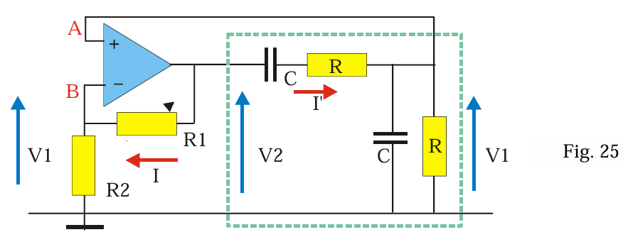
[Placeholder: Multiplicateur de capacité Fig. 23]
Fig. 23: Circuit multipliant une capacité (basé sur l'effet Miller généralisé).
Analyse (AOP idéal) : \( V_A = V_B = 0 \) (masse virtuelle).
Appliquons KCL au nœud d'entrée \( V_E \) (qui n'est pas une entrée de l'AOP mais le point où le courant I entre). Le courant I se divise en un courant \( i \) traversant C et un courant \( I-i \) traversant R2.
Le courant \( i \) traverse C puis R1 pour atteindre la sortie \( V_s \). La tension aux bornes de C est \( V_E - V_A = V_E \). La tension aux bornes de R1 est \( V_A - V_s = -V_s \).
Le courant \( i \) est \( i = \frac{V_E}{Z_C} = j\omega C V_E \).
La tension de sortie est \( V_s = V_A - i R_1 = 0 - i R_1 = -i R_1 = -(j\omega C V_E) R_1 = -j\omega R_1 C V_E \).
Le courant total entrant \( I \) est :
\[ I = \frac{V_E - V_A}{Z_C} + \frac{V_E - V_S}{R_2} = \frac{V_E}{1/(j\omega C)} + \frac{V_E - (-j\omega R_1 C V_E)}{R_2} \]
\[ I = j\omega C V_E + \frac{V_E}{R_2} + \frac{j\omega R_1 C V_E}{R_2} \]
\[ I = V_E \left( \frac{1}{R_2} + j\omega C \left( 1 + \frac{R_1}{R_2} \right) \right) \]
L'admittance d'entrée est \( Y_E = \frac{I}{V_E} = \frac{1}{R_2} + j\omega \left[ C \left( 1 + \frac{R_1}{R_2} \right) \right] \).
Ce circuit est équivalent à une résistance \( R_2 \) en parallèle avec un condensateur dont la capacité effective vaut :
\[ C' = C \left( 1 + \frac{R_1}{R_2} \right) \]
Comme le rapport \( R_1/R_2 \) peut être grand, ce montage permet de simuler une capacité de grande valeur à partir d'une capacité C plus petite. C'est une application de l'effet Miller généralisé.
8.3 - Simulateur d'inductance (Gyrator)
Par rapport au montage précédent, on permute le condensateur C et la résistance R1.
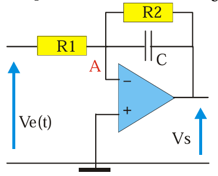
[Placeholder: Simulateur d'inductance Fig. 24]
Fig. 24: Circuit simulant une inductance (Gyrator d'Antoniou).
Analyse (AOP idéal) : \( V_A = V_B = 0 \) (masse virtuelle).
Le courant \( i \) traversant R1 est \( i = (V_E - V_A) / R_1 = V_E / R_1 \).
Ce courant \( i \) traverse ensuite C pour atteindre la sortie \( V_s \). La tension de sortie est \( V_s = V_A - V_C = 0 - V_C \). La tension aux bornes de C est \( V_C = i Z_C = (V_E / R_1) \times (1 / j\omega C) \).
Donc \( V_s = - \frac{V_E}{j\omega C R_1} \).
Le courant total entrant \( I \) est :
\[ I = \frac{V_E - V_A}{R_1} + \frac{V_E - V_S}{R_2} = \frac{V_E}{R_1} + \frac{V_E - (-V_E / (j\omega C R_1))}{R_2} \]
\[ I = \frac{V_E}{R_1} + \frac{V_E}{R_2} + \frac{V_E}{j\omega C R_1 R_2} \]
\[ I = V_E \left( \left( \frac{1}{R_1} + \frac{1}{R_2} \right) + \frac{1}{j\omega C R_1 R_2} \right) \]
L'admittance d'entrée est \( Y_E = \frac{I}{V_E} = \left( \frac{1}{R_1} + \frac{1}{R_2} \right) + \frac{1}{j\omega (C R_1 R_2)} \).
Cette admittance est celle d'une résistance \( r = R_1 || R_2 = \frac{R_1 R_2}{R_1 + R_2} \) (car \( 1/r = 1/R_1 + 1/R_2 \)) mise en parallèle avec une inductance \( L_{eq} \) dont l'admittance est \( 1/(j\omega L_{eq}) \).
Par identification :
\[ L_{eq} = C R_1 R_2 \]
Ce circuit est équivalent à une résistance \( r = R_1 || R_2 \) en parallèle avec une inductance \( L = C R_1 R_2 \). Il permet de simuler une inductance (souvent de grande valeur) en utilisant un condensateur (généralement plus facile à intégrer et moins cher qu'une vraie bobine). Ce type de circuit est appelé gyrateur.
9 – Oscillateur sinusoïdal
Un oscillateur est un circuit qui génère un signal périodique sans signal d'entrée externe. Pour obtenir une oscillation sinusoïdale, on utilise généralement un amplificateur (\( H \)) et une boucle de réaction positive (\( K \)).
La fonction de transfert en boucle fermée est (formule de Black pour réaction positive) : \( H' = \frac{H}{1 - KH} \).
Si la condition \( KH = 1 \) (appelée condition de Barkhausen) est satisfaite pour une fréquence \( f_0 \) donnée, alors le dénominateur s'annule et le gain \( H' \) devient infini. Cela signifie qu'une tension de sortie \( V_s \) peut exister même si la tension d'entrée \( V_e \) est nulle.
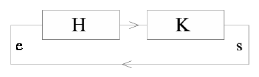
[Placeholder: Boucle de réaction positive]
Schéma de principe d'un système bouclé avec réaction positive.
On peut aussi considérer la boucle : \( V_S = H V_E \), où \( V_E \) est l'erreur (entrée de H). La réaction donne \( V_{feedback} = K V_S \). Si cette tension de feedback est l'entrée de l'amplificateur (\( V_E = V_{feedback} \)), alors \( V_S = H (K V_S) \). Cette équation admet comme solutions : \( V_S = 0 \) (pas d'oscillation) ou \( KH = 1 \).
La condition \( KH = 1 \) est une condition sur les nombres complexes. Elle implique deux conditions réelles :
Condition d'amplitude : Le module du gain de boucle doit être égal à 1 : \( |K(j\omega_0) H(j\omega_0)| = 1 \).
Condition de phase : La phase totale de la boucle doit être un multiple de \( 2\pi \) (ou 0°) : \( \arg(K(j\omega_0) H(j\omega_0)) = 2n\pi \) (\( n \in \mathbb{Z} \)). Pour une réaction positive et un amplificateur non-inverseur, cela signifie que le déphasage de K doit être nul à \( \omega_0 \).
Si cette condition n'est satisfaite que pour une seule fréquence \( \omega_0 \), on obtient un oscillateur sinusoïdal à cette fréquence. En pratique, le gain \( |H| \) doit être ajusté pour que \( |KH| \) soit exactement 1. Si \( |KH| < 1 \), les oscillations s'amortissent et cessent. Si \( |KH| > 1 \), les oscillations divergent jusqu'à être limitées par la saturation de l'amplificateur (la sortie devient alors non sinusoïdale). Un mécanisme de stabilisation d'amplitude est donc nécessaire.
Oscillateur à pont de Wien
C'est un oscillateur RC classique qui utilise un AOP comme élément amplificateur et un filtre de Wien comme réseau de réaction sélectif en fréquence.
Le filtre de Wien (quadripôle R-C série / R-C parallèle) est placé dans la boucle de réaction positive (connecté à l'entrée +). L'amplificateur est un non-inverseur (gain \( A = 1 + R_1/R_2 \)) dont le gain est ajusté par R1 et R2 dans la boucle de réaction négative.
[Placeholder: Oscillateur à pont de Wien Fig. 25]
Fig. 25: Oscillateur à pont de Wien.
Le réseau de Wien a une fonction de transfert \( \beta(j\omega) = \frac{V_{out}}{V_{in}} \) (ici \( V_{out} \) est la tension appliquée à l'entrée + de l'AOP, et \( V_{in} \) est la tension de sortie de l'AOP, \( V_s \)). On a calculé précédemment (section 8.3 avec permutation R/C) ou on peut calculer :
\[ \beta(j\omega) = \frac{Z_p}{Z_s + Z_p} = \frac{R/(1+j\omega RC)}{(R + 1/j\omega C) + R/(1+j\omega RC)} = \frac{j\omega RC}{1 - \omega^2 R^2 C^2 + 3j\omega RC} \]
La condition d'oscillation est \( A \cdot \beta(j\omega_0) = 1 \), où \( A = 1 + R_1/R_2 \) est le gain de l'amplificateur non-inverseur.
Pour que \( A \cdot \beta \) soit réel et positif, il faut que \( \beta \) soit réel et positif. Cela se produit lorsque la partie imaginaire du dénominateur de \( \beta \) est nulle par rapport à la partie réelle, ce qui n'est pas directement le cas. Il faut que la phase de \( \beta \) soit nulle.
La phase de \( \beta \) est nulle si la partie réelle de son dénominateur est nulle : \( 1 - \omega^2 R^2 C^2 = 0 \).
Cela définit la fréquence d'oscillation \( \omega_0 \):
\[ \omega_0 = \frac{1}{RC} \quad \implies \quad f_0 = \frac{1}{2\pi RC} \]
À cette fréquence \( \omega_0 \), le dénominateur de \( \beta \) devient \( 3j\omega_0 RC \).
Donc, \( \beta(j\omega_0) = \frac{j\omega_0 RC}{3j\omega_0 RC} = \frac{1}{3} \).
La condition d'oscillation \( A \cdot \beta(j\omega_0) = 1 \) devient alors :
\[ \left( 1 + \frac{R_1}{R_2} \right) \times \frac{1}{3} = 1 \]
\[ 1 + \frac{R_1}{R_2} = 3 \quad \implies \quad \frac{R_1}{R_2} = 2 \quad \implies \quad R_1 = 2 R_2 \]
Si la condition \( R_1 = 2R_2 \) est exactement satisfaite, le système oscille à la fréquence \( f_0 = 1/(2\pi RC) \).
Si le gain \( A = 1+R_1/R_2 \) est insuffisant (\( < 3 \)), l'oscillation cesse. S'il est trop grand (\( > 3 \)), il y a saturation et la sortie devient distordue (plutôt carrée).
En pratique, pour assurer le démarrage des oscillations (avoir \( |KH| > 1 \) au départ) et stabiliser l'amplitude (revenir à \( |KH| = 1 \) une fois l'amplitude souhaitée atteinte), on utilise pour la résistance \( R_2 \) un élément non linéaire dont la résistance augmente avec le courant qui la traverse (par exemple une petite ampoule à filament de tungstène, ou des diodes, ou un JFET utilisé en résistance variable). Ainsi, si l'amplitude \( V_s \) croît, le courant dans R1 et R2 croît, R2 augmente, le gain \( A=1+R1/R2 \) diminue et se stabilise à 3.
10 – Filtres actifs
Les filtres réalisés uniquement à partir de dipôles passifs (résistances, capacités, inductances) introduisent une atténuation du signal. L'emploi des amplificateurs opérationnels permet de réaliser simplement des filtres RC actifs (sans inductances) dont les caractéristiques (gain, sélectivité, pentes) peuvent être équivalentes ou supérieures à celles des filtres LC passifs. Ils permettent notamment d'obtenir du gain dans la bande passante et des facteurs de qualité élevés.
Il existe un nombre considérable de filtres actifs différents, classés selon la forme de leur fonction de transfert (forme de la réponse en fréquence et en phase) en filtres de Butterworth (réponse magnitude la plus plate possible dans la bande passante), de Tchebychev (pente plus raide mais ondulation dans la bande passante), de Bessel (phase linéaire, donc temps de propagation de groupe constant), elliptiques (Cauer), etc. Des ouvrages entiers sont consacrés à leur étude et leur conception. Nous examinerons seulement quelques exemples simples.
Exemple de filtre du premier ordre (Passe-bas)
Considérons un amplificateur inverseur (§5.1) où la résistance de contre-réaction \( R_2 \) est mise en parallèle avec un condensateur \( C \). L'impédance de contre-réaction \( Z_2 \) est donc \( Z_2 = R_2 || Z_C = R_2 || (1/j\omega C) = \frac{R_2}{1 + j\omega R_2 C} \). L'impédance d'entrée est \( Z_1 = R_1 \).
Fig. (Filtre Actif 1): Filtre passe-bas actif du premier ordre.
La fonction de transfert est \( H(j\omega) = -Z_2 / Z_1 \):
\[ H(j\omega) = -\frac{R_2 / (1 + j\omega R_2 C)}{R_1} = \frac{-R_2/R_1}{1 + j\omega R_2 C} \]
On pose le gain en continu (DC gain) \( H_0 = -R_2/R_1 \) et la pulsation de coupure \( \omega_c = 1/(R_2 C) \). La fonction de transfert s'écrit :
\[ H(j\omega) = \frac{H_0}{1 + j(\omega/\omega_c)} \]
C'est la fonction de transfert d'un filtre passe-bas du premier ordre. Son gain en module est :
\[ G(\omega) = |H(j\omega)| = \frac{|H_0|}{\sqrt{1 + (\omega/\omega_c)^2}} \]
La fréquence de coupure à -3dB est \( f_c = \omega_c / (2\pi) = 1 / (2\pi R_2 C) \). Pour \( \omega \gg \omega_c \), le gain diminue de 20 dB par décade. Si la résistance \( R_2 \) est très grande (voire absente), le montage se comporte alors comme un intégrateur (cf § 5.3) aux fréquences où \( \omega R_2 C \gg 1 \).
Exemple de filtre du second ordre (Sallen et Key Passe-bas)
La structure de Sallen et Key permet de réaliser des filtres actifs du second ordre en utilisant un seul AOP. La version la plus simple utilise l'AOP monté en suiveur (gain = +1).
Fig. 27: Filtre passe-bas Sallen-Key du second ordre (gain unitaire).
L'amplificateur est monté en suiveur : \( V_A = V_S \).
L'application du théorème de Millman (ou KCL) aux nœuds A et B donne (après calculs, voir section 8.2 pour une dérivation similaire mais pas identique) :
\[ H(j\omega) = \frac{V_S}{V_E} = \frac{1}{1 - \omega^2 R^2 C^2 + j 2\omega RC} \]
En posant la pulsation propre \( \omega_0 = 1/(RC) \) et la variable réduite \( x = \omega/\omega_0 = \omega RC \), on obtient :
\[ H(j\omega) = \frac{1}{1 - x^2 + j 2x} \]
(Note: Le texte original donne \( H(j\omega) = 1/(1+jx)^2 \) ce qui correspond à \( 1/(1-x^2+j2x) \), mais écrit aussi \( |H|=1/(1+x^2) \) ce qui est la magnitude de \( 1/(1+jx)^2 \). La formule \( H = 1 / (1 - x^2 + j 2x) \) est la forme canonique d'un filtre du second ordre avec un facteur d'amortissement \( \zeta = 1 \)).
C'est donc un filtre passe-bas du second ordre (pente de -40 dB/décade en haute fréquence). Les pôles de cette fonction de transfert sont confondus (\( p = -\omega_0 \)). En permutant les deux résistances et les deux condensateurs on obtient un filtre passe-haut. En utilisant une structure différente on peut obtenir un passe-bande. Pour obtenir des filtres d'ordre plus élevés, on met plusieurs cellules de Sallen-Key (ou d'autres topologies) en cascade (en ajustant leurs fréquences de coupure et/ou leurs facteurs d'amortissement).
On peut donner un gain à ce filtre en modifiant la rétroaction de l'AOP pour qu'il ne soit plus un suiveur mais un amplificateur non-inverseur de gain \( k = 1 + R_1/R_2 \). (Attention, R1 et R2 ici sont les résistances de gain de l'AOP, à ne pas confondre avec les R du filtre).
[Placeholder: Filtre Sallen-Key passe-bas avec gain Fig. 28]
Fig. 28: Filtre passe-bas Sallen-Key avec gain k.
On pose \( k = (R_1 + R_2)/R_2 \) (gain de l'AOP non-inverseur). Un calcul analogue au précédent donne, pour la fonction de transfert (avec \( x = \omega RC = \omega/\omega_0 \)) :
\[ H(j\omega) = \frac{k}{1 - x^2 + j x (3-k)} \]
La forme canonique d'un filtre du second ordre est \( H(s) = \frac{H_0 \omega_0^2}{s^2 + 2\zeta\omega_0 s + \omega_0^2} \). En posant \( s=j\omega \), \( x=\omega/\omega_0 \): \( H(j\omega) = \frac{H_0}{1 - x^2 + j 2\zeta x} \).
Par identification, le gain DC est \( H_0 = k \), et le coefficient d'amortissement \( \zeta \) est \( 2\zeta = 3-k \), soit \( \zeta = (3-k)/2 \).
Selon la valeur de \( k \) (et donc de \( \zeta \)), le comportement du filtre est modifié :
Si \( k = 3 - \sqrt{2} \approx 1.586 \), alors \( 2\zeta = \sqrt{2} \), soit \( \zeta = 1/\sqrt{2} \approx 0.707 \). C'est la condition pour obtenir une réponse de Butterworth (réponse en magnitude la plus plate possible dans la bande passante, sans ondulation).
Si \( k < 1.586 \) (\( \zeta > 0.707 \)), la réponse est plus amortie. Pour certaines valeurs (ex: \( k=1.268 \Rightarrow \zeta=0.866 \)), on peut approximer une réponse de Bessel (qui optimise la linéarité de la phase, donc minimise la distorsion de forme des signaux complexes).
Si \( k > 1.586 \) (\( \zeta < 0.707 \)), la réponse présente une surtension (pic) près de la fréquence de coupure. Si \( k \) est proche de 3 (\( \zeta \to 0 \)), le filtre devient très sélectif mais avec une forte surtension. Pour des valeurs spécifiques de \( k \), on obtient une réponse de Tchebychev (ondulation dans la bande passante mais pente de coupure plus raide).
De nombreux circuits peuvent être considérés comme des blocs fonctionnels (comparateur, intégrateur, sommateur...) associables en cascade pour réaliser des fonctions plus complexes. Comme exemple, examinons le principe des générateurs de fonctions qui sont des montages produisant au moins deux formes d'ondes différentes (typiquement carré et triangle/rampe).
Fig. 29: Principe d'un générateur de fonctions carré/triangle.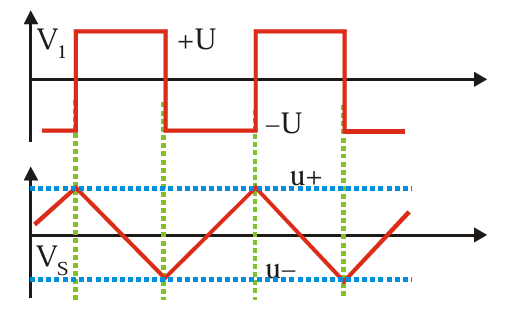
[Placeholder: Formes d'onde Générateur Fonctions Fig. 29 bis]
Formes d'onde typiques : V1 (sortie Schmitt, carré) et Vs (sortie Intégrateur, triangle).
Le premier amplificateur (gauche) est monté en bascule de Schmitt (comparateur à hystérésis, voir §7.2, ici avec \( V_{Ref}=0 \)). Il produit une tension de sortie \( V_1 \) rectangulaire (\( \pm U \)).
Le second amplificateur (droite) est monté en intégrateur (§5.3). Il intègre la tension rectangulaire \( V_1 \). L'intégrale d'une constante est une rampe linéaire. Donc, la sortie \( V_s \) est une tension triangulaire.
La boucle est fermée : la sortie triangulaire \( V_s \) est réinjectée à l'entrée de la bascule de Schmitt (via la résistance R notée V dans le schéma ?). La tension de sortie \( V_1 \) de la bascule change d'état lorsque la tension d'entrée \( V_s \) atteint les seuils de basculement de la bascule.
Ces seuils sont (avec \( V_{Ref}=0 \)): \( V_{TH} = +U \frac{R_1}{R_1 + R_2} \) et \( V_{TL} = -U \frac{R_1}{R_1 + R_2} \).
Lorsque \( V_1 = +U \), l'intégrateur génère une rampe décroissante (\( dV_s/dt = -V_1/RC = -U/RC \)). Lorsque \( V_s \) atteint \( V_{TL} \), la bascule commute, \( V_1 \) passe à \( -U \). L'intégrateur génère alors une rampe croissante (\( dV_s/dt = -V_1/RC = +U/RC \)). Lorsque \( V_s \) atteint \( V_{TH} \), la bascule commute à nouveau, et le cycle reprend. La fréquence dépend des valeurs de R, C, R1, R2 et U.
12 – Amplificateur d'instrumentation
Les constructeurs proposent maintenant des amplificateurs monolithiques intégrés, appelés amplificateurs d'instrumentation, conçus spécifiquement pour amplifier avec précision de faibles signaux différentiels en présence de fortes tensions de mode commun (par exemple, signaux de capteurs en pont). Leur structure interne est souvent basée sur le schéma de la figure 30.
Fig. 30: Structure typique d'un amplificateur d'instrumentation.
Ce sont des amplificateurs différentiels qui présentent l'avantage d'avoir une impédance d'entrée très grande et égale sur les deux entrées (\( E_1 \) et \( E_2 \)). On pourra comparer avec le montage simple du § 6 qui avait des impédances d'entrée différentes et plus faibles.
Le premier étage est constitué de deux amplificateurs non-inverseurs couplés par la résistance \( R_G \). Le second étage est un amplificateur différentiel classique (comme Fig 16) avec des résistances bien appariées (réalisées sur la même puce).
Analyse simplifiée : Les AOP du premier étage forcent \( V^- = V^+ \), donc les potentiels aux bornes de \( R_G \) sont égaux aux tensions d'entrée \( E_1 \) et \( E_2 \). Le courant dans \( R_G \) est \( I_{RG} = (E_1 - E_2) / R_G \). Ce courant traverse aussi les deux résistances \( R_o \). Les tensions de sortie du premier étage sont \( V_{o1} = E_1 + I_{RG} R_o \) et \( V_{o2} = E_2 - I_{RG} R_o \). La tension différentielle appliquée au second étage est \( V_{o1} - V_{o2} = (E_1 - E_2) + 2 I_{RG} R_o = (E_1 - E_2) (1 + 2R_o / R_G) \). Si le second étage (différentiel) a un gain de 1 (si ses 4 résistances sont égales, notées R' par exemple), alors la sortie finale est :
\[ V_s = \left( 1 + \frac{2R_o}{R_G} \right) (E_1 - E_2) \]
Le gain différentiel total est \( G = (1 + 2R_o / R_G) \). Il peut être ajusté en changeant la valeur d'une seule résistance externe \( R_G \).
(Note: la formule du texte original \( V_s = (1 + (R_1+R_2)/R_G) (E_2 - E_1) \) semble utiliser une notation différente ou correspondre à une variation. La formule dérivée ici est plus standard pour la structure montrée).
13 – Redresseur sans seuil (Precision Rectifier)
Les diodes standard ont une tension de seuil (\( V_f \approx 0.6 - 0.7 \, V \) pour le silicium) qui empêche de redresser correctement les signaux de faible amplitude. L'utilisation d'un AOP permet de réaliser un redresseur "idéal" ou "sans seuil".
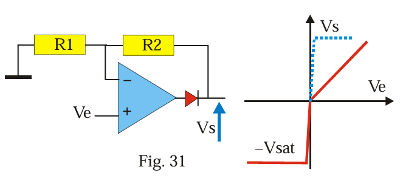
[Placeholder: Redresseur sans seuil Fig. 31]
Fig. 31: Redresseur demi-alternance sans seuil ("super diode").
Considérons le montage de la figure 31 (interprété comme une "super diode" où Ve est à l'entrée +, la sortie de l'AOP via la diode est la sortie Vs, et Vs est rebouclée sur l'entrée -).
Si \( V_e > 0 \): L'AOP essaie de rendre \( V^- = V^+ = V_e \). Pour cela, sa sortie doit devenir positive d'une valeur suffisante pour vaincre le seuil de la diode (\( V_{out,AOP} = V_e + V_f \)). La diode conduit, et la tension de sortie du circuit \( V_s \) devient égale à \( V_e \). La boucle est fermée, l'AOP fonctionne en suiveur.
Si \( V_e < 0 \): L'AOP essaie de rendre \( V^- = V^+ = V_e \). Pour cela, sa sortie devrait devenir négative. La diode est alors bloquée (circuit ouvert). La boucle de réaction est ouverte. La sortie de l'AOP va saturer à \( -V_{sat} \). La tension de sortie du circuit \( V_s \) est alors nulle (si aucune charge n'est connectée ou si une résistance de charge vers la masse existe).
La fonction de transfert totale du système (tension d'entrée \( V_e \) / tension de sortie \( V_s \)) est donc celle d'un redresseur demi-alternance idéal (voir courbe grisée sur la figure) : \( V_s = V_e \) si \( V_e > 0 \), \( V_s = 0 \) si \( V_e \le 0 \). La tension de seuil de la diode est en effet "compensée" par le gain élevé de l'AOP en boucle ouverte lorsque la diode est sur le point de conduire. L'AOP fournit la tension supplémentaire nécessaire (\( V_f \)) pour que la sortie suive l'entrée.
Conclusions
Nous avons présenté une liste non limitative d'applications des amplificateurs opérationnels. Avec le modèle de l'amplificateur idéal, les calculs sont généralement simples et donnent une bonne première approximation du fonctionnement. À titre d'exercice, l'étudiant est invité à reprendre les démonstrations en utilisant d'autres méthodes que celles qui ont été utilisées (par exemple, KCL systématiquement au lieu de Millman ou superposition).
Toutefois, le modèle de l'amplificateur idéal connaît des limites principalement pour les hautes fréquences (gain fini dépendant de f, slew rate) et pour les applications de haute précision (offsets, bruit). Il faut alors utiliser les formules générales (modèle réel) et les calculs deviennent souvent plus complexes même pour des montages simples. La simulation sur ordinateur devient alors un outil précieux.
Annexe : Théorème de Millman et Amplificateurs Opérationnels
L'utilisation du théorème de Millman permet souvent d'obtenir rapidement la solution des problèmes relatifs aux amplificateurs idéaux. Il convient toutefois de l'appliquer correctement !
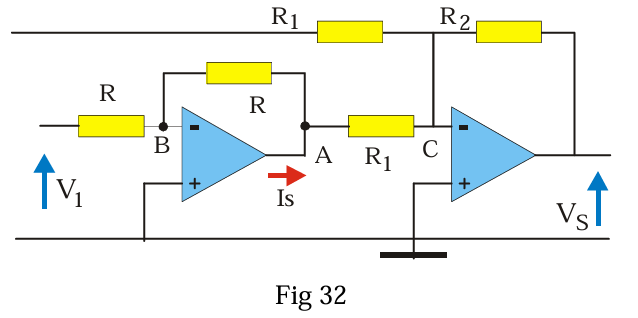
[Placeholder: Application Millman Fig. 32]
Fig. 32: Exemple d'application (et non-application) du théorème de Millman.
Au point B (entrée d'un AOP idéal) : Il est légitime d'écrire (en supposant les résistances de gauche R, celle du feedback R1, l'autre R1 aussi, et la sortie du premier AOP est VA)
\[ V_B = \frac{V_1/R + V_A/R}{1/R + 1/R} \]
car les courants d'entrée dans l'amplificateur sont négligeables.
Au point A (sortie d'un AOP) : Par contre, il ne faut pas oublier de tenir compte du courant de sortie de l'AOP (\( I_s \)) qui lui n'est pas négligeable. Ainsi l'écriture correcte du théorème au point A est :
\[ V_A = \frac{V_B/R + V_C/R_1 + I_s}{1/R + 1/R_1} \]
L'utilisation du théorème de Millman à la sortie d'un amplificateur opérationnel ne donnera en général aucune information exploitable car le courant de sortie \( I_s \) n'est pas connu à ce stade du calcul. Il faut déterminer la tension de sortie de l'AOP par sa relation entrée-sortie (\( V_{out} = \mu (V^+ - V^-) \) ou via les règles de l'AOP idéal en régime linéaire).